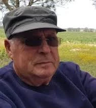

כפר עזה
זיו איתן ז"ל
מורה דרך ויוזם מיזם 'מוקירים'
סיפור חיים
איתן זיויק זיו ז״ל, בנם של חנה ויצחק זלדין ואח לעודד, נולד בכ״ז באב תש״ט, 22 באוגוסט 1949, בתל אביב. הוא גדל והתחנך בגבעתיים, למד בבית הספר היסודי ״בורוכוב״ ולאחר מכן בפנימיית הכפר הירוק. בצעירותו היה חניך בתנועת הנוער העובד והלומד.
בשנת 1967 התגייס איתן לצה״ל ושירת כלוחם בסיירת מטכ״ל. הוא המשיך לשירות קבע עד גיל 32, והשתחרר בדרגת רב־סרן. בשירות המילואים הגיע לדרגת סגן־אלוף. השירות הצבאי, ערכי המנהיגות, האחריות ואהבת הארץ ליוו אותו לאורך חייו.
לאחר שירותו הצבאי עבד איתן כמדריך של״ח בתיכון ברמלה ובתיכון ביבנה, ובהמשך עבד במנהל לבטיחות בדרכים. מנישואיו הראשונים נולדו לו שתי בנות, נעמה ונילי. הוא היה אב מסור ונוכח, שליווה את בנותיו בכל תחנה משמעותית בחייהן.
בתו נעמה סיפרה עליו: ״היית כה משמעותי בחיי, בגידולי, אב מאוד נוכח בכל ילדותי ונעורי וגם בבגרותי כמובן. לא פספסת אף תחנה משמעותית בחיי. כשהיינו צריכים אותך תמיד היית מגיע מיד, בלי חשבון ובלי תירוצים של מרחק או מחסור בכוחות. חינכת אותנו לערכי ברזל, להסתדר בחיים הכי טוב שרק אפשר, לעצמאות.״
בהמשך דרכו, מתוך אהבתו הגדולה לארץ, הפך איתן למורה דרך אהוב ונערץ. הוא הדריך בכל רחבי הארץ, ובשנים האחרונות בעיקר במקום שאהב יותר מכול — הנגב המערבי ואזור עוטף עזה. איתן הכיר כל שביל וכל סיבוב, כל צמח וכל עץ רענן, והיה מאגר ידע בלתי נדלה על כל מקום ואתר.
בהדרכותיו התמחה במורשת קרב, מחנאות, שדאות, לינה והתקיימות בתנאי שטח. הוא ידע לספר את ההיסטוריה ואת ההווה בגובה העיניים, בשפה עשירה, בהומור, בחיוך ובקריצה קטנה. ילדים, מבוגרים וקבוצות מכל גיל מצאו את עצמם מקשיבים לו בריכוז ובהנאה.
מתחילת שנות האלפיים עבר איתן להתגורר בקיבוץ כפר עזה. הקיבוץ והנגב המערבי הפכו לביתו, והוא היה מחובר עמוקות לאנשים, לנוף, לשדות, לאנדרטאות ולסיפורי המקום.
איתן יזם והקים את פרויקט ״מוקירים״, שבו מדי יום הזיכרון לחללי מערכות ישראל מתייצבים מורי דרך בעשרות אנדרטאות ברחבי הארץ בהתנדבות, ומספרים את סיפוריהם של הנופלים. הפרויקט ביטא את תפיסת עולמו: זיכרון חי, אחריות, סיפור, חינוך והכרת תודה.
בשנים האחרונות היה איתן גם מדריך בפסטיבל ״דרום אדום״, המתקיים מדי שנה בצפון הנגב בתקופת פריחת הכלניות. הוא ידע לחבר בין נוף, היסטוריה, אנשים וזיכרון, ולהפוך כל הדרכה למסע של משמעות.
בשנת 2018 נישא בשנית לתמי. איתן היה סבא למופת לנכדיו. הוא היה אדם ידען, רהוט, ערכי, אנושי ומלא חמלה; אדם שדיבר מהלב ובגובה העיניים. בשעות הפנאי אהב לקרוא ספרים, במיוחד תנ״ך, ולטייל בארץ ובעולם.
שבעה באוקטובר והימים שאחריו בבוקר שבת, שמחת תורה תשפ״ד, 7 באוקטובר 2023, חדרו מחבלים לקיבוץ כפר עזה במסגרת מתקפת הטרור הרצחנית על יישובי עוטף עזה.
באותו יום נרצחו בכפר עזה למעלה משבעים מתושבי הקיבוץ, ואחרים נחטפו לרצועת עזה. בין הנרצחים היו איתן ורעייתו תמי, שמחבלים פרצו לביתם.
איתן זיו נרצח בביתו בכפר עזה בכ״ב בתשרי תשפ״ד, 7 באוקטובר 2023. בן 74 היה במותו. הוא הובא למנוחות בבית העלמין בקיבוץ שפיים יחד עם רעייתו תמי, שנרצחה איתו. איתן הותיר אחריו שתי בנות, נכדים ואח.
על מצבתו כתבו אוהביו: ״זיכרונות שיצרת יחיו לנצח בתוכנו״, ולצד זאת את הפסוק: ״גבר חכם בעוז ואיש דעת מאמץ כח״.
זיכרון ומילים מהלב נעמה, בתו, ספדה לו: ״היו לך כאלה חיים ארוכים, מלאים בתוכן ובמשמעות. הרבה השפעה ותרומה היו לך לעולם. איש רב פעלים, איש כל כך מיוחד וחד שכל. איש עם לב ענק ממש. איש מעניין ורחב אופקים. כל חייך היו לך הרבה חברים ואנשים רבים אהבו אותך ממש. אדם מיוחד שלגמרי לא ניתן להתעלם ממנו. איש עם נוכחות רבה וחזקה, וכשמו כן הוא — איתן כסלע.״
בתו נילי סיפרה עליו: ״אבא אהוב שלי, גיבור שלי, אבא שכל ילדה הייתה חולמת שיהיה לה. יצרת כל חלום בשתי ידיך. אהבת הארץ והמולדת זרמה בעורקיך, לכל פינה בארצנו הקטנה היה לך סיפור אמיתי או אגדה. אהבת את האדמה, ההיסטוריה והמורשת.״
חברו עמית סיפר כי איתן הכיר את האזור, כל שביל וכל סיבוב, את ההיסטוריה ואת האנשים, וידע לספר עליהם כך שכולם הקשיבו לו — מילדים קטנים ועד מבוגרים.
חבר אחר תיאר אותו כ״מורה הדרך האולטימטיבי של העוטף״, וקרא לו ״המלח והסוכר של הארץ הזו״.
בדף הפייסבוק של פרויקט ״מוקירים״ כתבו ראשי אגודת מורי הדרך בישראל כי איתן היה מורה דרך ברמ״ח איבריו, לוחם ומפקד בסיירת מטכ״ל, וכי פרויקט הדגל שלו, ״מוקירים״, ימשיך להיות הנצחה ראויה לזכרו.
איתן נזכר כאדם של ידע, דרך, ערכים וזיכרון; אב, סב, בן זוג, לוחם, מורה דרך ואיש ארץ ישראל בכל רמ״ח איבריו. זכרו ממשיך לחיות בסיפורים שסיפר, בדרכים שבהן הלך, באנדרטאות שבהן הדריך, ובאנשים הרבים שנגע בהם.